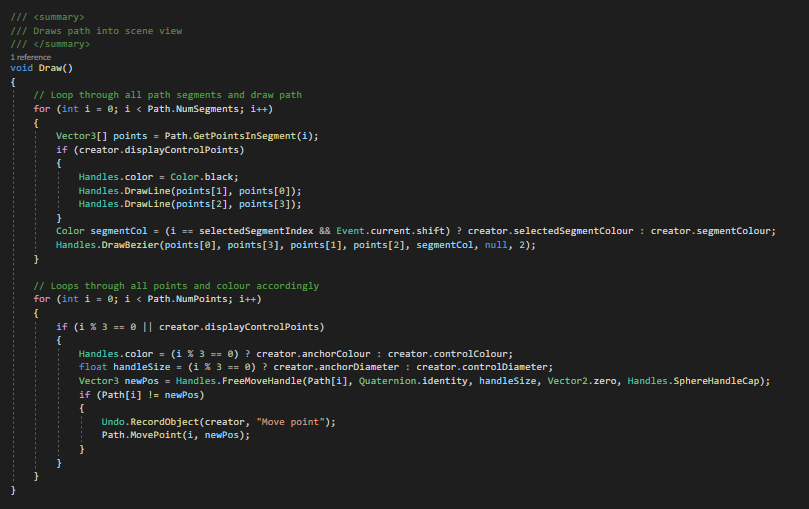

Overview
Freeflight is a gliding game with a focus on exploration. With the satisying engagement of a collectathon combined with glide-based gameplay, players will be able to freely glide around levels; collecting resources to upgrade their glider and progressing through a unique storyline as they progress on with the game. My role within this team was a programmer, creating different systems and scripts for the designers to use throughout levels.
This game was made within a team of 12 throughout our second year of University, and won game of the year for both people's choice and staff's choice. The team consisted of 3 designers, 4 artists, 4 programmers, and a writer. Everyone worked within these specialisms, allowing for the game to take shape and be produced to the best quality it could. For this game, I prototyped and developed numerous systems. For example, an easily adaptable resource system, an AI pathing tool, glider abilities, and other miscellaneus scripts.
Example Systems + Scripts
The adaptable resource system was a series of scripts that made use of scriptable objects, enabling designers to easily add new resource types to the game. These new resources would be automatically added to an in-game UI once added to the resource list, and were easy to set up as a collectable object within the levels.
Below is the setup for ResourceManager.cs, the main script of the resource system:
The awake method is used to set up the system, getting the list of resources from the resources folder and using it to create the game UI that displays the player's resource counts.

Meanwhile, throughout the script are other methods that enable us to edit and obtain these different resource values. For example, to remove and add to the count of how many times a specific resource the player owns, a method to obtain the amount of a resource owned, and a method to update the player's UI to reflect these changes.
The main premise of this system was to enable the designers to easily add or remove resource types in the game, enabling them to spend more time on level design and fine tuning the other mechanics in the game.
A script used to destroy nearby objects to get through a secret passageway or to collect resources stuck inside an object.
The script functioned through gathering all nearby objects and checking their tags, creating the relevant reaction depending on which tag the object has,
for example, if the object was tagged with "Pushable", the object would be pushed in the direction away from the glider, or if it was a "Destructable" object,
the gameObject would be simply destroyed.
One improvement I would make to this script if I was making it now would be to use a LayerMask, since this would remove having to sort through all object
that have nothing to do with the shockwave ability. Another improvement being having the case subjects be variables in case the tags need to be changed
by the designers.
The other functions of this script included a simple coroutine for handling a delay between uses, and a function to play an animation when used.
This was a tool which allowed the user to use bezier curves to create a custom path for an AI agent to follow. It functioned through having a list of points, and using
these points to draw a bezier curve. having two points be the points in which the curve go through, and another two being the weight points that help the user to change
the curve.
Although most of this tool was made using a tutorial (which can be found here ),
I adapted it into a 3D space and implemented my own system so an agent could follow the created path.
Main Controller:
Below is the base script for this system. It controls adding, removing and editing of the different segments of the created curve.
Whenever anything was changed to do with a segment, a number of different points needed to be created, removed, or changed so that the editor could function as
intended.
This script also had a function for moving the different points so that the resultant bezier curve could then be updated.
This function would take a given point and change it's stored position value to be the new value given from the editor script. The LoopIndex function called
throughout is to ensure we stay within the array, in which if we are above the array count, it will loop back to the first point in the list.
Editor script:
Below is the input handler of the PathEditor script. This is an editor script that draws the path into the scene view to allow the user to move around the points
and better customise their path.
Depending on the user input, the editor will do different things, for example, if the user was pressing m1 and LShift, a new segment would be automatically added
to the path either onto the end or between two segments, depending on whether the user has a segment selected or not.
The second if statement controls repainting the path so that it can stay updated in the editor view.
Below is the function that handles drawing the editor into the scene view. It lops through all segments within the path and gets all the points in the path, storing these in an array. IT then draws lines between anchor points and their control point. These points are these passed through the DrawBezier function so it can be displayed to the user.
After This, the script loops through all points in the path and draws these points into the editor, ensuring that the different types of handles are displayed as intended so that they can be differentiated between. It then draws these points into the editor, ensuring that the different types of handles are displayed in the intended way so they can be differentiated between.
Follow Curve:
The following script is what controlled an object to follow a given path. This script gets where the object is along the current curve being followed in the path
and calculates the next location to go to along this curve, making use of a bezier equation, and then rotates around this curve so it's always facing forward.
Once this object reaches the end of the current curve it will progress onto the next segment, looping back to the initial segment once it has reached the end.
Throughout development I prototyped, developed and maintained many other scripts and systems, for example other glider abilities, AI behaviours, and more.
What I learnt from this project